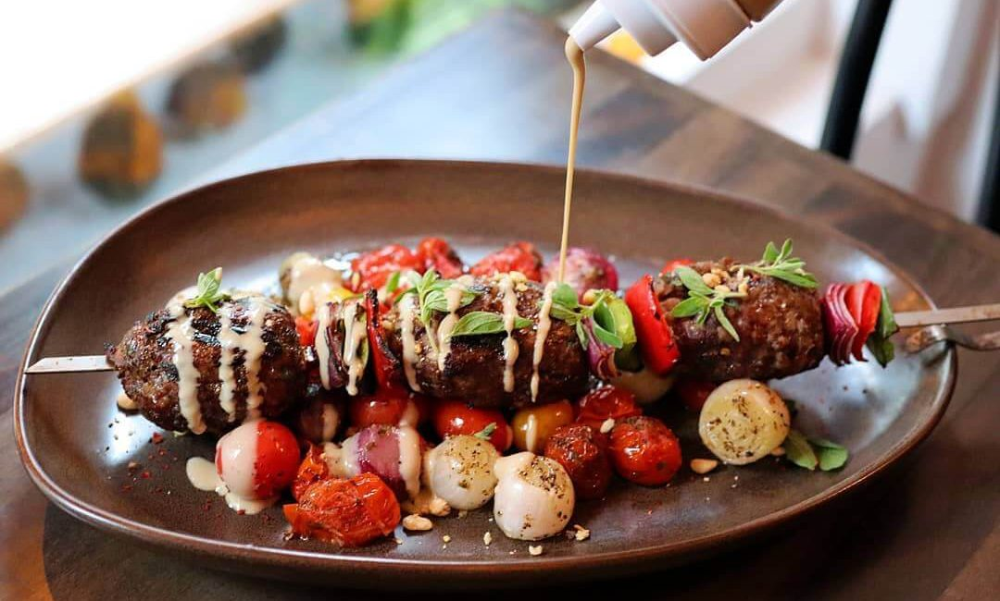

Lamb Kofta

What Is Turkish Lamb Kofta?
Koftas refers to a dish made with spiced ground meat (mince).
Sometimes it's made on skewers (this recipe) though they do also
come in non skewered form, often shaped like a torpedo / football.
Typically, they are stuffed inside flatbreads with fresh salad or
pickled vegetables and sauces, though they can be served over rice
with fresh sides.
What to serve with Lamb Koftas
The most common ways of serving koftas are:
-
Flatbreads - to make wraps (try these easy no-yeast homemade
flatbreads)
- Simple Lemon Yogurt Sauce (included in recipe)
- Hummus - extra / alternative sauce option
-
A colourful minted red cabbage salad which is a refreshing
contrast and adds great crunch
Ingredients
KOFTAS
- 1 lb / 500 g lamb mince (ground lamb)
- 1/2 onion, grated
- 1/4 cup breadcrumbs, preferably panko
- 2 cloves garlic, crushed
- 2 tbsp chopped fresh coriander
KOFTAS SPICES
- 2 tsp cumin
- 2 tsp coriander
- 2 tsp paprika
- 1.5 tsp ground cinnamon
-
1 tsp cayenne pepper
(this is a bit spicy, reduce to taste or leave out)
- 1 1/2 tsp salt
- 1/2 black pepper
YOGHURT SAUCE
- 1 cup yogurt, Greek or other thick plain
- 1 tbsp extra virgin olive oil
- 1 clove garlic, crushed
- 1 tsp cumin
- 1 tbsp lemon juice
- 1/4 tsp salt and pepper, each
TO SERVE
- 8 skewers
- 1 tbsp extra virgin olive oil
-
8 flatbreads (small) or 4 (large),
warmed (homemade or bought)
-
Shredded Red Cabbage, Carrot and Mint Salad OR shredded
lettuce, tomato and onion slices
Instructions
-
Yogurt Sauce: Combine the yogurt sauce ingredients and
leave in fridge for at least 20 mninutes for the flavor to
develop (overnight even better!).
-
Koftas: Grate the onion into the bowl using a standard
box grater. Add remaining Kofta ingredients and mix well with
your hands.
-
With damp hands, divide the meat into 8 equal pieces and push
and shape the meat onto 8 skewers. Make them smooth (looks
nicer, pictured!) or a bit nubbly (more surface area to brown!).
COOKING
-
Stove: Preheat 1/2 tbsp oil in a large skillet over
medium high heat. Cook in batches for 5 minutes in total,
turning to brown evenly all over.
-
BBQ: BBQ on medium high for about 6 minutes, rotating to
brown all over.
-
Broiler/Oven Grill: preheat and cook koftas 30cm/10" from
heat source for 12 minutes, rotating as needed until lightly
browned (you won't get as good a browning as stove/BBQ).
SERVING
-
Do a DIY spread - pile everything onto a platter a make everyone
serve themselves.
-
Get a flatbread, smear with Yogurt Sauce, top with Red Cabbage
Mint Salad (more options Note 3) then Kofta, drizzle over more
Yoghurt Sauce. Devour and be happy!
Back to top
Back to homepage